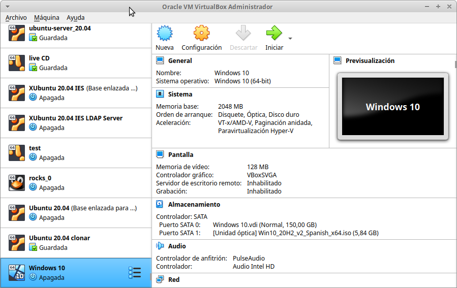
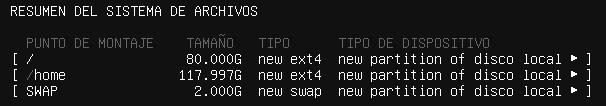

La virtualización#
La virtualización es una tecnología que permite la creación de entornos virtuales o máquinas virtuales (VM) que funcionan de manera independiente en un mismo sistema físico. Consiste en la abstracción de los recursos físicos, como la CPU, la memoria, el almacenamiento y los dispositivos de entrada/salida, para asignarlos y compartirlos entre varias máquinas virtuales.
El objetivo principal de la virtualización es maximizar la utilización de los recursos físicos y mejorar la eficiencia de los sistemas informáticos. Al utilizar la virtualización, es posible ejecutar múltiples sistemas operativos y aplicaciones en un único servidor o computadora, lo que reduce la necesidad de hardware físico adicional.
Algunos conceptos clave relacionados con la virtualización son:
Hipervisor: También conocido como monitor de máquina virtual (VMM), es el software o firmware responsable de crear y gestionar las máquinas virtuales. Se encarga de asignar y administrar los recursos físicos entre las VM.
Existen dos tipos principales de hipervisores, también conocidos como monitores de máquina virtual (VMM):
Hipervisor de tipo 1 o «nativo» (Bare Metal Hypervisor): Este tipo de hipervisor se ejecuta directamente sobre el hardware físico sin depender de un sistema operativo anfitrión. Actúa como una capa de virtualización entre el hardware y las máquinas virtuales. Algunos ejemplos de hipervisores de tipo 1 son:
VMware ESXi
Microsoft Hyper-V
Citrix XenServer
KVM (Kernel-based Virtual Machine)
Oracle VM Server
Hipervisor de tipo 2 o «hosted» (Hosted Hypervisor): Este tipo de hipervisor se ejecuta como una aplicación dentro de un sistema operativo anfitrión. Utiliza los recursos y servicios del sistema operativo subyacente para proporcionar la virtualización. Algunos ejemplos de hipervisores de tipo 2 son:
VMware Workstation
Oracle VirtualBox
Microsoft Virtual PC
Parallels Desktop
Máquina virtual (VM): Es un entorno virtual que emula una computadora completa con su propio sistema operativo, aplicaciones y configuraciones. Cada VM se ejecuta de forma aislada y puede ser tratada como una entidad independiente.
Host: Es el sistema físico o servidor que ejecuta el hipervisor y aloja las máquinas virtuales.
Guest: Es la máquina virtual que se ejecuta dentro de un host. Puede ser un sistema operativo completo o una instancia de una aplicación específica.
Portabilidad: Las máquinas virtuales son independientes del hardware subyacente, lo que facilita su migración entre diferentes servidores físicos sin necesidad de modificar el sistema operativo o las aplicaciones.
Escalabilidad: La virtualización permite escalar verticalmente (aumentar los recursos asignados a una VM) o escalar horizontalmente (agregar más VM) según las necesidades de carga de trabajo.
La virtualización se utiliza en diversos entornos, como servidores, redes, almacenamiento y escritorios, proporcionando flexibilidad, eficiencia y mayor aprovechamiento de los recursos informáticos.
Que sus componentes sean virtuales no quiere decir necesariamente que no existan. Por ejemplo, una máquina virtual puede tener unos recursos reservados de 2 GB de RAM y 20 GB de disco duro, que salen del PC donde está instalada la máquina virtual
Hay varias aplicaciones muy conocidas capaz de hacer esto, aunque las más famosas son VMWare, VirtualBox, QEMU , etc..
En clase utilizaremos VirtualBox:
Resumen:
OVF/OVA : es un estándar abierto para empaquetar y distribuir un dispositivo virtual que consta de una o varias máquinas virtuales (VM).
Clonación completa, una copia exacta (incluyendo todos los archivos de disco duro virtual) de la máquina original serán creados.
Clonación enlazada, una nueva máquina será creada, pero los archivos de las unidades de disco duro virtuales serán vinculados a los archivos de disco duro virtual de la máquina original y no podrá mover la nueva máquina virtual a una computadora diferente sin mover los originales también.
Puede que en algún momento, por diversos motivos, nos encontremos con alguna dirección MAC duplicada en una MV (poco frecuente) o entre MV diferentes. Como ya sabemos, en una misma LAN no puede haber dos interfaces de red con igual MAC, esto nos daría problemas de red a nivel de enlace. Para evitar este problema debemos cambiar las MAC para que no estén duplicadas.
VirtualBox Guest Additions es un conjunto de controladores y aplicaciones del sistema que mejoran el rendimiento y la funcionalidad de un sistema operativo invitado que se ejecuta dentro de una máquina virtual de VirtualBox. Cuando instalas las Guest Additions en el sistema operativo invitado, se habilitan funciones como carpetas compartidas, integración de ratón sin problemas, mejor soporte de video y mejor rendimiento.
El paquete de Guest Additions proporciona controladores adicionales para el hardware de tu máquina virtual, incluyendo gráficos, redes y dispositivos de entrada. También incluye utilidades que te permiten redimensionar la ventana de la máquina virtual dinámicamente, compartir carpetas entre el sistema anfitrión y el invitado, y habilitar el intercambio de portapapeles.
Las instantáneas (snapshots) en VirtualBox son una característica que te permite guardar el estado actual de una máquina virtual en un punto específico del tiempo. Con las instantáneas, puedes capturar una imagen completa de la máquina virtual, incluyendo su configuración, discos virtuales y memoria, y luego restaurarla posteriormente si es necesario.
Al crear una instantánea, VirtualBox guarda una copia del estado actual de la máquina virtual, incluyendo los registros de la CPU, la memoria y el estado de los discos virtuales. Esto te permite revertir fácilmente a ese punto en el tiempo en caso de que realices cambios o configuraciones que desees deshacer más adelante.
Las tecnologías VT-x (Intel Virtualization Technology) y AMD-V (AMD Virtualization) son extensiones de hardware que proporcionan soporte para la virtualización en procesadores Intel y AMD, respectivamente. Estas tecnologías permiten que los hipervisores, como VirtualBox, ejecuten máquinas virtuales de manera más eficiente y segura. Si habilitamos esa opción, entonces también podremos habilitar «Habilitar paginación anidada» que mejorará aún más el rendimiento del sistema permitiendo gestionar la memoria por medio del hardware y no del software.
los discos duros estáticos tienen un tamaño fijo, ofrecen un rendimiento constante pero pueden ocupar más espacio en el almacenamiento del host. Los discos duros dinámicos crecen según sea necesario, permiten un uso eficiente del almacenamiento y son más fáciles de migrar y copiar, pero pueden experimentar fragmentación y pueden tener un rendimiento ligeramente inferior en comparación con los discos estáticos
La opción PAE/NX permite habilitar el acceso a más de 4 GB de memoria RAM en sistemas de 32 bits y se habilita la protección NX para mejorar la seguridad del sistema. Si se deshabilita, el sistema operativo y las aplicaciones estarán limitados a utilizar solo 4 GB de memoria y no se aprovechará la protección NX.
En “Carpetas Compartidas”, podemos crear una carpeta compartida entre la máquina anfitrión y la invitada. Para ello, hacemos clic en “Agregar Carpeta compartida”…
En Avanzado, podemos cambiar otras opciones, como puede ser el permitir que ambos sistemas, el invitado y el anfitrión, puedan compartir el portapapeles, lo que permitirá copiar y pegar de uno a otro.
RED
Cable conectado que se encuentra en la parte de opciones avanzadas en la sección de red de la MV (también en el menú contextual del icono de red que se encuentra en la parte inferior derecha de la ventana de la MV, eligiendo Connect Network Adapter, o a través del menú de la MV Dispositivos -> Red).
Modo NAT es la forma más sencilla que tiene una MV para acceder a una red externa. Por lo general, no se requiere ninguna configuración en la red, ni en el anfitrión ni en el invitado. Por esta razón, es el modo de red por defecto en VB. En modo NAT, VB coloca un router entre el exterior (hacia donde hace NAT) y el invitado. Dicho router posee un servidor DHCP que sirve hacia el interior. Este router mapea el tráfico desde y hacia la MV de forma transparente. Cada MV en modo NAT tendrá su propio router, por lo que estarán en redes aisladas, lo que implica, que por defecto, las MMVV que tienen su tarjeta de red en modo NAT no pueden verse entre sí.
Modo Red NAT, el cual funciona como el router de nuestra casa, es decir, los equipos que estén dentro de la misma red NAT podrán comunicarse entre sí, y es aquí donde radica la diferencia con el modo NAT el cual siempre constituye una red con un único equipo y no de varios como ahora es el caso. Para utilizarlo tenemos que crear la red NAT : Desde el menú Archivo -> Preferencias -> Red -> Redes NAT.
Modo Adaptador puente simula que la tarjeta virtual está conectada al mismo switch que la tarjeta física del anfitrión, por lo tanto, la MV se va a comportar como si fuese un equipo más dentro de la misma red física en la que está el equipo anfitrión.
Modo Red interna, podemos construir redes aisladas, en las cuales solo habrá comunicación entre las MsVs que pertenezcan a la misma red interna.
Modo Solo-anfitrión se utiliza para crear una red interna a la que pertenecerá también el equipo anfitrión, algo que no sucede en el modo Red interna.
Comandos útiles virtualBox:#
VBoxManage list vms
VBoxManage list runningvms
VBoxManage startvm 'Ubuntu Server 16.04' --type headless
VBoxManage controlvm 'Ubuntu Server 16.04' savestate
En modo gráfico:
Ctrl_derecho + Supr = Ctrl + Atl + Supr
Ctrl_derecho = Salir de pantalla
Ctrl_derecho + f = pasar/volver de pantalla completa
Ctrl_derecho + c = pasar/volver modo escalado
Caso práctico: MV Ubuntu Server 22.04#
Descárgate el sistema operativo Ubuntu Server 22.04 en formato (ISO) de su página oficial
Utiliza un disco de 200 GB y 2G de RAM
Iniciamos la maquina y procedemos a la instalación, llama a esta maquina virtual MV Ubuntu Server 22.04
Utiliza un adaptador puente para la red con IP 10.4.X.Y/8 (255.0.0.0), donde X.Y son parte de las ips de vuestros equipos, en el caso de que tengas un portátil utiliza DHCP.
DNS 8.8.8.8, Gateway 10.0.0.2 y subred 10.0.0.0/8,
Hacemos el siguiente esquema de particiones, para ello selecciona (x) Custom storage layout
Usuario: tunombre y utiliza de contraseña: alumno Para el nombre del servidor utiliza compute-0-0, para ello modifica el archivo /etc/hostname
Caso práctico: Windows 11#
Descarte la ISO de Windwos 11 de la página de Microsoft
Creamos una nueva maquina virtual llamada Windows11
Creamos una maquina virtual con 100GB de disco duro reservado dinámicamente, 2GB de RAM, un adaptador en modo modo puente y un memoria de vídeo de 128MB. Omite la instalación desantendida y deshabilita EFI
Para la instalación desconecta el cable de red virtual:
Configuración/Red/Adaptador1/Avanzadas/[ ]Cable conectado
En el caso de que aparezca el aviso de «startup.nsh» en Virtualbox, presionamos shift+F10 y cambiamos el idioma a English, vamos a continuar y pasamos al menu de instalación.
Selecciona «No tengo clave de producto» y selecciona Windows 11 Education
Selecciona la instalación personalizada : instalar solo Windows (avanzado)
Configuramos Windows con una cuenta local [1], para ello :
Omitimos una segunda distribución de teclado y cuando se quiera conectar a una red seleccionamos «No tengo internet»,
Seguimos con Continuar con la configuración limitada
Configuramos Windows con una cuenta local
usuario : tunombre
contraseña : @lumn0
Preguntas de seguridad para esta cuenta:
¿Cuál era el nombre de tu primera mascota? @lumn0
¿Cuál es el nombre de la ciudad en la que naciste? @lumn0
¿Cuál era tu apodo de infancia? @lumn0
No permitimos que Microsoft y las aplicaciones usen tu ubicación, ni permitimos que encuentren nuestro dispositivo, es decir que en las siguientes preguntas, le diremos que «No» o «Solo los obligatorios», le daremos los mínimos permisos a Microsoft sobre nuestros datos y maquinas.
De igual manera rechazamos la ayuda del asistente digital, ni usamos el reconocimiento de voz en línea
Notas
Caso práctico: Windows Server 2022#
Windows Server es la plataforma para crear una infraestructura de aplicaciones conectadas, redes y servicios web. Como administrador de Windows Server, probablemente haya usado muchas de las consolas nativas de Administración de Microsoft (MMC) de Windows Server para mantener la infraestructura segura y disponible.
Windows Server Standard: permite ejecutar como máximo dos VMs en hasta dos procesadores y 64GB RAM. Es ideal para un entorno no virtualizado o poco virtualizado en el que se desee incluir características de alta disponibilidad.
Windows Server Datacenter: permite ejecutar un número ilimitado de VMs en hasta dos procesadores. Se recomienda para un entorno altamente virtualizado que requiera características de alta disponibilidad, incluida la agrupación en clústeres.
Respecto a la interfaz de usuario, se ofrecen dos posibilidades pero siempre se podrá pasar de una opción a la otra libremente en cualquier momento.
Server Core: reduce el espacio requerido en el disco, la posible superficie expuesta a ataques y especialmente los requisitos de servicio y reinicio del servidor.
Servidor con una GUI: ofrece los elementos de la interfaz de usuario y las herramientas de administración de gráficos.
Si no dispones de de una licencia de Windows Server 2022, puedes obtener, de forma totalmente gratuita, una versión de evaluación plenamente funcional durante un periodo de 180 días en la siguiente dirección https://www.microsoft.com/es-ES/evalcenter/evaluate-windows-server-2022
Creamos una maquina virtual con 100GB de disco duro reservado dinámicamente, 2GB de RAM, 2CPU, un adaptador en modo modo puente y un memoria de vídeo de 128MB
Para la instalación seleccionamos: Windows Server 2022 Standard Evaluation (experiencia de escritorio)
Contraseña del Administrador: @lumn0
Utiliza un adaptador puente para la red con IP 10.4.X.Y/8 (255.0.0.0), donde X.Y son parte de las ips de vuestros equipos, en el caso de que tengas un portátil utiliza ¿DHCP?, DNS 8.8.8.8, Gateway 10.0.0.2
Configurar nombre: Panel / Servidor local : Cambiamos nombre equipo, le llamamos SRV-tunombre
Comprobar que la zona horaria sea la correcta : Servidor local / Ajustar zona horaria
Habilitamos ping : Administrador del servidor / Panel / Herramientas, buscamos la opción de firewall de Windows con seguridad avanzada nos vamos a las reglas entrantes, que es donde nos está bloqueando el tráfico firewall. Nos dirigimos a la zona de la derecha y buscamos “Archivos e impresoras compartidas (petición eco IMCPv4…” solicitud de echo entrante v4 y damos a habilitar
Caso práctico: Windows Server 2022 sin GUI#
Creamos una maquina virtual llamada WS22tunombre, con 100GB de disco duro reservado dinámicamente, 2GB de RAM, 2CPU, un adaptador en modo modo puente y un memoria de vídeo de 128MB
Para la instalación seleccionamos: Windows Server 22 Standar Evaluation (instalamos la versión sin la mayor parte del entorno gráfico)
Instalación nueva : Personalizada, instalar solo Windows (avanzado) y usamos todo el disco.
Contraseña del Administrador: @lumn0
Instala el servidor ssh
Utiliza un adaptador puente para la red con IP 10.4.X.Y/8 (255.0.0.0), donde X.Y son parte de las ips de vuestros equipos, en el caso de que tengas un portátil utiliza DHCP, DNS 8.8.8.8, Gateway 10.0.0.2
Cambia el nombre por WS22tunombre
Habilita el ping
Instala el editor vi